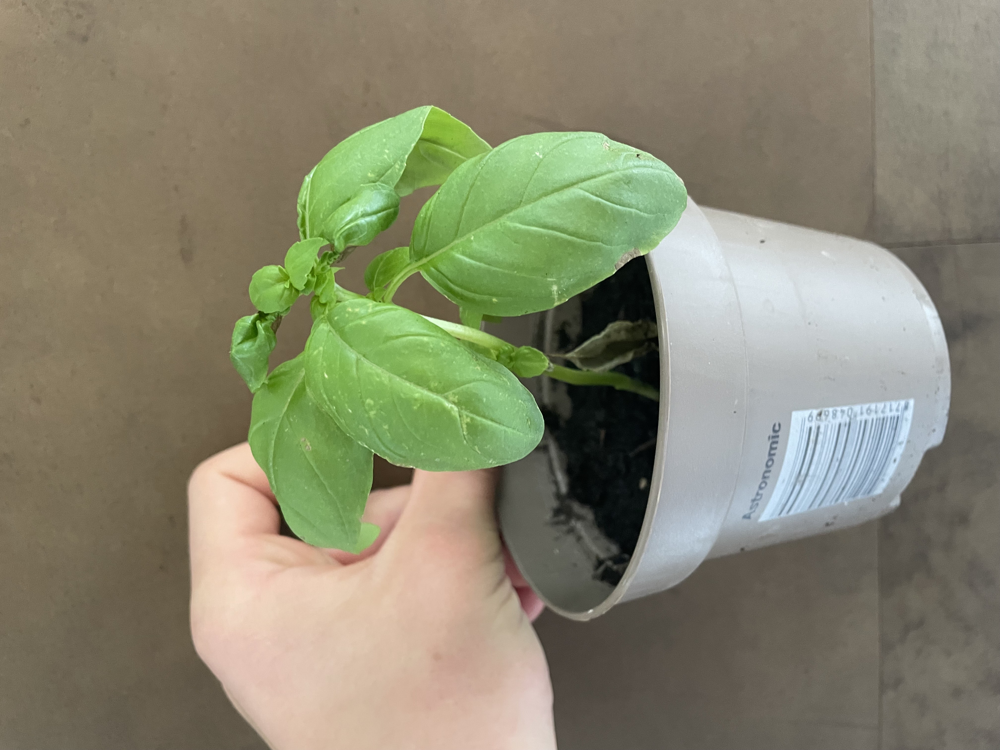

Hier vind je al onze plantjes en producten 🌱

Middelgrote basilicum plant. (Voor in huis of buiten boven minimaal 12 °C)
€2,99

Aardbeien planten, 1,5 jaar oud en gezond. Kan met zorg het hele jaar de grond in
€14,99 per stuk

Salie kruid, heerlijk voor door de ravioli met wat boter, zout, peper en tijm.
€3,50 per bosje

Tomatenplant, ideaal voor in de tuin of serre. Geeft de hele zomer sappige vleestomaten.
€7,99 per stuk

Tweede variant tomatenplant, wat kleiner maar erg productief en sterk. Perfect voor in potten op balkon.
€5,99 per stuk

Vers potje tuinkers, ideaal als gezonde topping voor broodjes, salades of soep.
€1,99 per potje
Geïnteresseerd in onze producten?
Vul hieronder je gegevens in en wij nemen contact met je op.